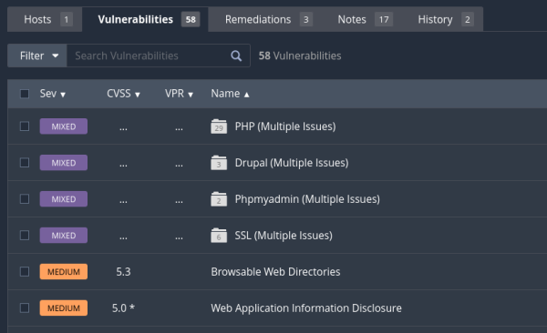

Nexus se va a basar en descubrir estas vulnerabilidades realizando una serie de escáneres que van a tratar de identificar todos estos servicios que están corriendo en los diferentes puertos las tecnologías que corren por detrás y las versiones que están corriendo, de manera que luego pueda compararlo con una serie de información que tiene de diferentes bases de datos.
Cuando le damos al nuevo escaneo nos aparecen diferentes plantillas que ya tienen Nessus establecidas para que nosotros no tengamos que configurar demasiado los nuevos escaneos y simplemente pulsando en una de ellas, obtengamos resultados rápidamente.
Vamos a iniciar nuestro primer escaneo, que va a ser simplemente un descubrimiento de host.
También podemos definir como un calendario para que se ejecuten con diferentes frecuencia a una determinada.
Y por último, si queremos recibir notificaciones por correo electrónico, podríamos poner nuestro correo.
Aquí nos dice que qué tipo de escaneo queremos hacer, que si queremos enumerar los Host, queremos identificar, el sistema operativo, queremos hacer un escaneo de puertos con algunos puertos comunes de todos los puertos o algo personalizado.
Seleccionamos únicamente una enumeración.
La configuración general es que vamos a testear la máquina también en la que está corriendo nessus, los mecanismos que vamos a utilizar para descubrir estos hosts van a ser concretamente establecer una conexión completa TCP, método ARP y con un ICMP.
Lo guardamos y lo ejecutamos.
Aparte del descubrimiento de hosts tenemos también descubrimiento de vulnerabilidades.
Ya tiene algunas políticas configuradas para descubrir determinadas vulnerabilidades que puedan ser interesantes.
Si nos vamos a la parte de plugins podemos ver todos los que va a ejecutar para el análisis:

Podemos exportarlo a un archivo para poder tener un mejor informe.
| Linked file: Basic scan test_5a6n96.html |